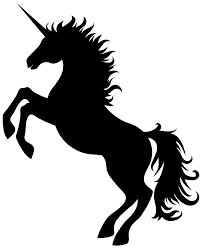

A Land of Wonder
Long ago in another world or just possibly before recorded history, there were creatures and beings full of magic and wonder that possessed abilities to manipulate the environment around them. Not all could do so but the beasts with specific powers would maintain the balance of the ecosystems and energy of the world to prevent chaos. Different places around the world call these beasts by different names like monsters, cryptids, gods, and sometimes demons. Their names are often influenced by what they do around the environment and how the lives of the locals are affected. It takes time to safely discover and report on these creatures so do forgive us in the short articles as some researchers have been out of contact for sometime and we fear some may have had shortcomings. Safety measures have been increased and improved to assist in the quality of care to our researchers and to speed the data recovery. With that in mind, this information is here for you to learn about the existence of these beasts and more creatures will be uploaded to this encyclopedia as they are discovered. Also, the research expeditions for the Land Sentinel and Oceanic Leviathan have returned and have been uploaded to the website for you to read.
Gallery YoPriceVille 